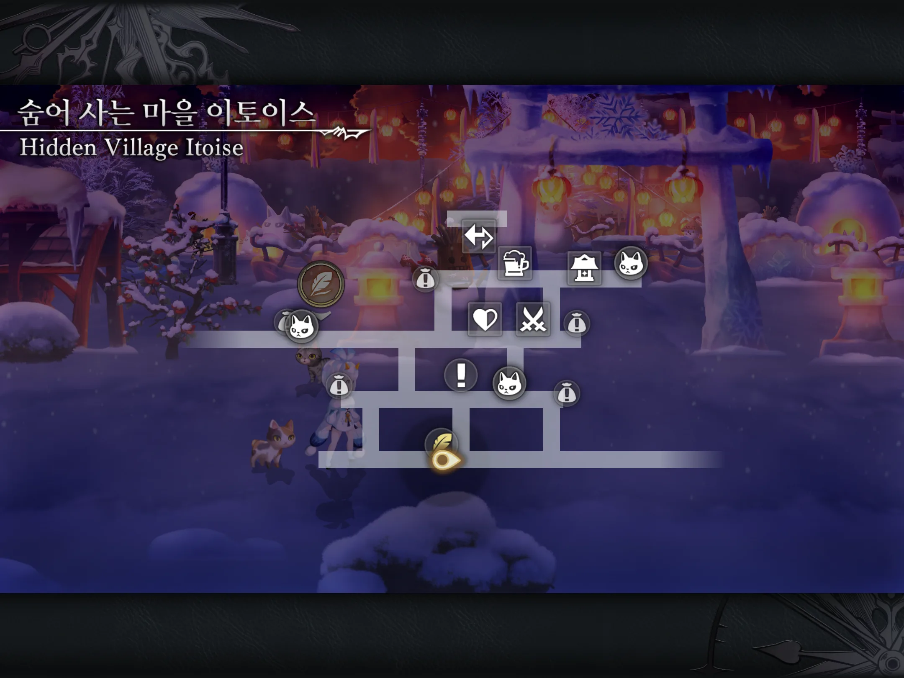
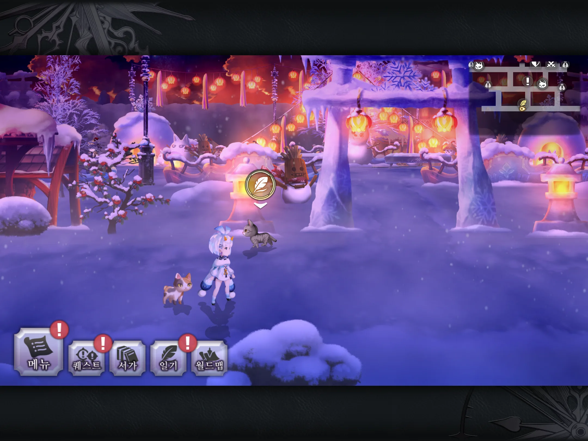

🐱 고양이 일기 · 냥도장 가이드
› 현대 › 가를레아
숨어 사는 마을 이토이스
어나더에덴 고양이 일기(냥도장) 위치
현대
가를레아
냥도장 대사
이 마을은 너무 춥다냥! 어서 눈 움집 안으로 피난해야겠다냥!


제보: cheese1006
전체 74곳 가이드에서 보기 →
← 요마 황궁 (본전 1층)
쿤룬 산맥 →
현대 · 가를레아의 다른 냥도장
뱀의 땅 이자나
이나나리 고원
단풍 거리
용의 땅 나그샴
고양이 신사
오니가하라
이카루가 마을
온천
요마전 (1층)
요마 황궁 (본전 1층)
숨어 사는 마을 이토이스
쿤룬 산맥
황폐한 절 (본당 앞)
박명의 섬